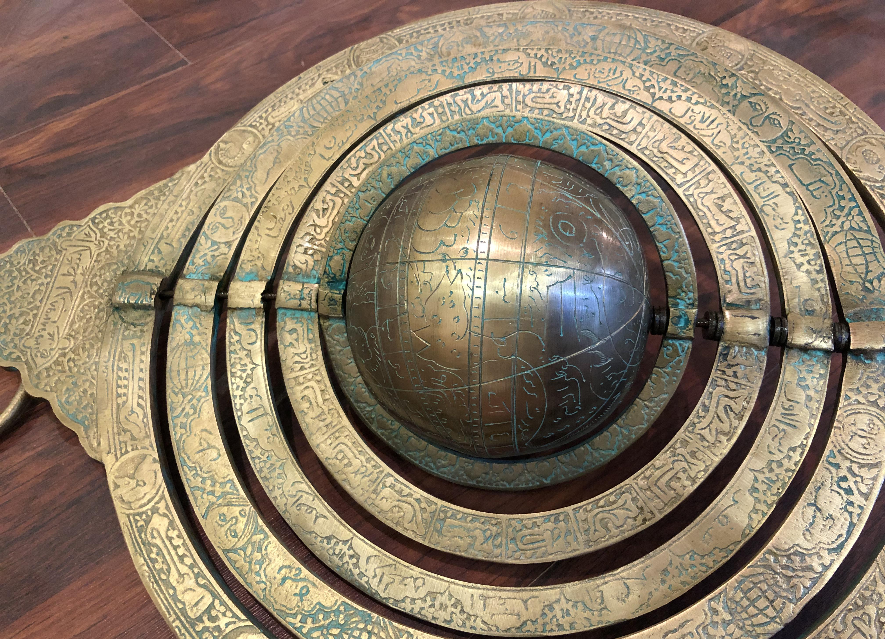

Islamic astrolabe · 3D study
Engraved brass rings and a globe turn on one axle inside the throne-crowned frame.
Drag a ring to turn it
Drag the backdrop to orbit · scroll to zoom

Preparing model
Engraving the brass
Loading typefaces
WebGL2 is unavailable
This viewer renders the astrolabe live on the GPU. Turn on hardware acceleration, or open the page in a current version of Chrome, Edge, Firefox or Safari.